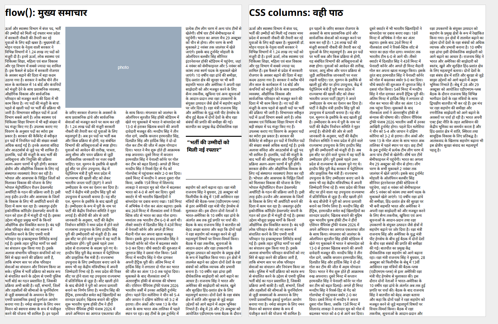
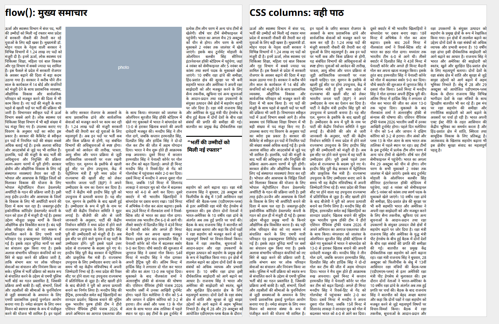

Assumed grid. A3, 12 mm margins, 5 columns, 4 mm gutter, 9 pt body (GG-007). Rerun the gates on the printer's real grid when the spec sheet arrives.
Decision: GO, Pretext is the live engine (docs/PHASE0_DECISION.md, D-034). Final run: npm run harness -- --phase 0 --done, 2026-10-30, printed "Phase 0: every gate passes". npm test: 89 passed, 0 failed.
| Gate | Status | Result | Need |
|---|---|---|---|
| G0.parity: body line breaks vs browser, 127 real paragraphs | PASS | 99.7% (3546/3556), 0 longer than browser | ≥ 95 |
| G0.guard: brand name and licence checks | PASS | 0 failing | 0 |
| G0.flow: flow() contract and own tests | PASS | 22 | ≥ 17 |
| G0.speed: flow() on a full A3 page | PASS | 4.1 ms median | ≤ 30 |
| G0.pdfpos: PDF matches flow() | PASS | left 0.009 pt; right p95 0.010, worst 0.051 pt (raster); fonts embedded and subset | ≤ 0.1 |
| G0.headline: bold 18-36 px, 200 real headlines, 4 fonts | PASS | 12796/12800, 0 longer | ≥ 99.5 |
| G0.black: text and rules on K only | PASS | 1 (Amal: separations and CorelDRAW check of rewrite.pdf and gray.pdf) | 1 |
Left: flow() lines drawn absolutely, 4 columns, a photo and a boxed quote. Right: the same text in plain CSS columns. Rebuild: node scripts/flow-png.mjs.

The same flow() lines justified the export way: word spacing only, no letter-spacing (D-006), last line ragged. On the right, CSS text-align: justify. Same 200 lines, so justifying does not change the breaks. Word spaces: median 1.67×, worst 6.14×, 61 of 199 lines over 2×. These are the wide gaps the justify experiment (D-030) targets. Rebuild: node scripts/flow-png.mjs --justify.

| Page | What it shows |
|---|---|
| task5-flow | flow(): columns, photos, minimum gap 4/6/8 em |
| flow-dead-gaps | Space left empty beside photos (other branch) |
| gate-review | Measured proposals for justify, PDF positions, speed |
| gate-decisions | G0.speed and G0.pdfpos added; the ष्ट outlier; cheap justify before and after; first font coverage |
| gate-batch-headline-raster | Raster right edges with negative controls; G0.headline activated |
| font-coverage-headlines | Coverage rerun with 200 headlines: nothing missing |
| g0-black-prep | Four colour routes, ink plates, tone checks, reviewer verdict |
| gate-gaps | Every risk no gate checks yet |
Run in your own terminal on branch gate-review. Your .gitignore and .graphifyignore changes and scratch/ are left out.
git add harness/gates.json harness/judges.lock.json harness/results/G0.black.json harness/results/tests.json \ spike/run.mjs spike/samples/janshakti-live.txt spike/clean-samples.mjs spike/out/report.json spike/out/report.md \ scripts/black-spike.mjs scripts/flow-png.mjs docs/DECISIONS.md docs/GATE_GAPS.md docs/PHASE0_DECISION.md docs/proposals \ demos/g0-black-prep.html demos/g0-black-prep demos/phase0-done.html demos/phase0-done demos/tasks.json demos/index.html demos/gate-gaps.html git commit -m "Phase 0 done: clean samples, Noto 700 headlines, G0.black active, decision and audits (D-033, D-034)" \ -m "Site UI text stripped from the samples (spike/clean-samples.mjs); G0.headline also covers Noto Sans and Serif Devanagari 700; G0.black switched to active on Amal's check of the plates. docs/PHASE0_DECISION.md: GO, Pretext live engine, export route and the reviewer's conditions. Phase-end audit rows GG-028..GG-039, plus GG-040. flow.png (scripts/flow-png.mjs), K-plate check proposal, tone checks in the black spike." \ -m "Co-Authored-By: Claude Opus 5.5 <noreply@anthropic.com>" npm test && npm run harness -- --phase 0 --done git checkout main git merge --no-ff gate-review -m "Merge gate-review: Phase 0 complete" npm test && npm run harness -- --phase 0 --done git tag -a phase-0-done -m "Phase 0: every gate passes (D-034)" git push origin main --tags
The flow-dead-gaps branch is not in this merge. Decide separately whether to merge or drop it.